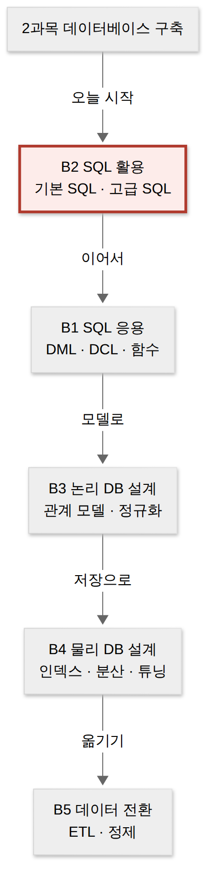
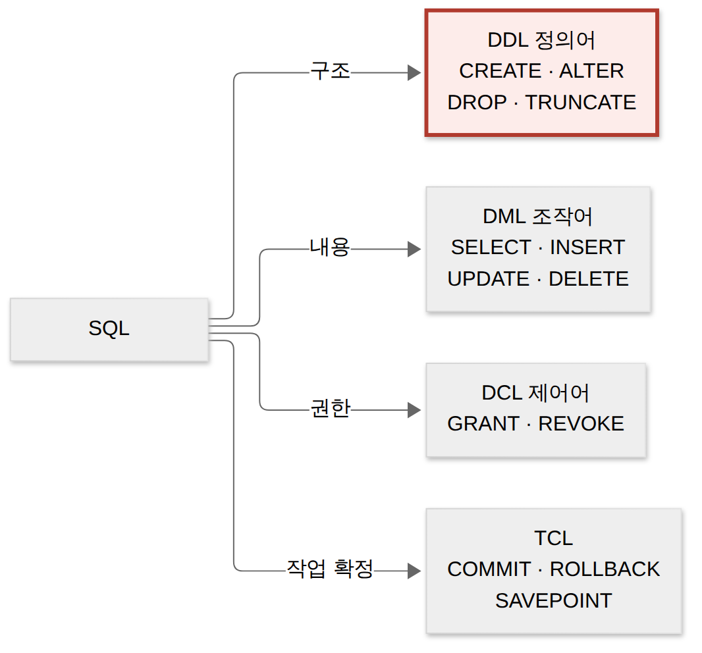
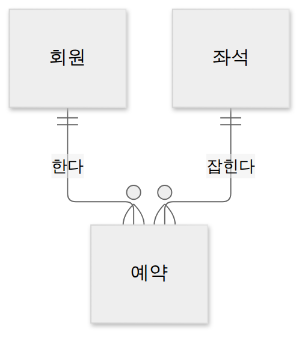
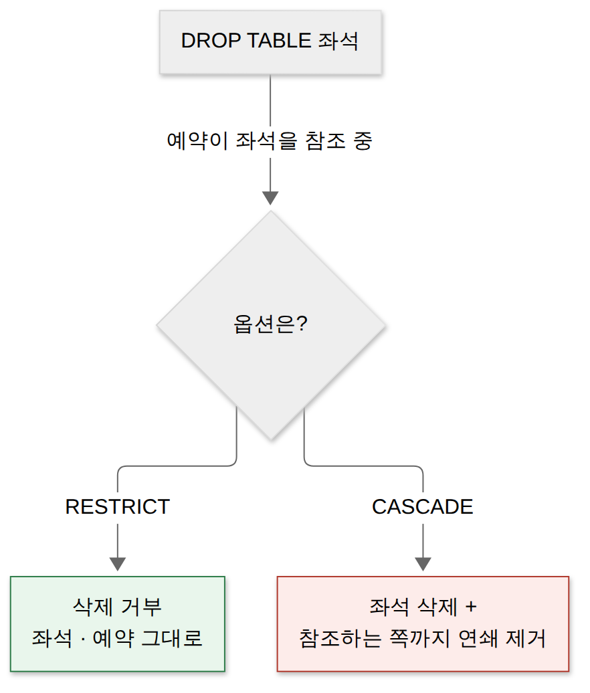
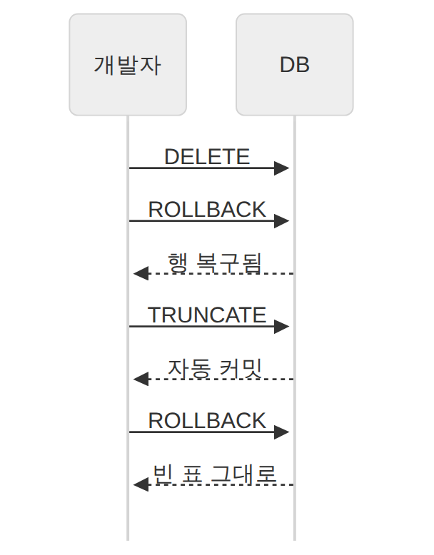

D029 · 2과목 시작: 릴레이션 구조와 DDL(CREATE·ALTER·DROP·TRUNCATE)
B2 오늘부터 2과목 데이터베이스 구축이에요. 어제 D028로 1과목 진도를 마쳤죠. 1과목이 소프트웨어를 어떻게 만들지 정하는 과목이었다면, 2과목은 그 소프트웨어가 기억할 데이터를 어디에, 어떤 모양과 규칙으로 담을지 정하는 과목이에요. 예시는 스터디 카페 예약 서비스 ‘자리있소’의 DB를 처음 까는 하루로 끝까지 따라가요.
- 2과목 큰 그림(B1~B5)과 SQL 분류(DDL·DML·DCL, 그리고 TCL)를 구별할 수 있다
- 릴레이션 구조 용어(튜플·속성·도메인·차수·카디널리티)를 표 그림에서 짚을 수 있다
- CREATE·ALTER·DROP·TRUNCATE와 제약조건 6가지, CASCADE/RESTRICT를 구별할 수 있다
- DROP·TRUNCATE·DELETE의 차이를 설명할 수 있다
1. 큰 그림 — 2과목은 데이터를 담는 집 이야기
1과목에서 ‘자리있소’ 같은 앱은 요구를 받고, 화면과 구조를 설계하고, 만들고, 테스트하는 과정을 거쳤어요. 그런데 앱이 꺼졌다 켜져도 회원과 예약이 남아 있으려면 데이터를 어딘가에 꾸준히 담아 둬야 해요. 그 ‘어딘가’가 데이터베이스이고, 2과목은 그 집을 짓고 쓰는 법이에요. 1과목이 집을 어떻게 지을지 회의하는 과목이었다면, 2과목은 그 집에 들일 물건을 어느 서랍에 어떤 이름표로 넣을지 정하는 과목이에요.
공식 범위는 다섯 칸이에요. 순서는 B1부터지만, 공부는 표를 만드는 말(B2 기본 SQL)부터 시작하는 게 자연스러워요. 표가 있어야 그 안의 행을 고르고(B1 DML), 권한을 나누고(DCL), 나중에 표 자체를 잘 설계하는 법(B3·B4)이 의미가 생기거든요. 오늘은 빨간 칸, B2의 첫 부분이에요.

한 장 요약 — 다섯 칸이 각각 무엇을 다루는지예요.
| 범위 | 무엇을 다루나 | 이번 주 일정 |
|---|---|---|
| B2 SQL 활용 | DDL, 트랜잭션, 데이터 사전, 뷰·인덱스, 조인·서브쿼리 | 오늘 DDL · 11/2 트랜잭션 · 11/6 조인 · 11/9 뷰·인덱스 |
| B1 SQL 응용 | DML, DCL, 그룹·윈도우 함수, 절차형 SQL | 11/3 DCL · 11/4 DML · 11/5 함수 |
| B3 논리 DB 설계 | 관계 모델·키·무결성, 관계대수, ER 모델, 정규화 | 11/11 이후 |
| B4 물리 DB 설계 | 인덱스, 파티셔닝, 분산 DB, 반정규화, 튜닝 | 그다음 |
| B5 데이터 전환 | ETL, 전환 계획·검증, 데이터 정제 | 2과목 마지막 |
→ 이 장면의 결과물: 2과목 지도. 그런데 지도에 SQL이란 말이 계속 나오죠. SQL 하나로 왜 칸이 여러 개로 나뉘는지부터 봐요.
2. SQL의 네 갈래 — 같은 언어, 다른 책임
SQL(Structured Query Language)은 관계형 데이터베이스와 대화하는 표준 언어예요. 그런데 한 언어 안에도 “표를 만들어라”와 “표에서 행을 꺼내라”는 성격이 전혀 달라요. 앞의 것을 잘못 쓰면 표가 통째로 사라지고, 뒤의 것은 잘못 써도 결과가 이상할 뿐이죠. 그래서 책임에 따라 갈래를 나눠요.
DDL(Data Definition Language, 데이터 정의어)은 테이블·뷰·인덱스 같은 데이터를 담는 그릇(구조)을 만들고 바꾸고 없애는 명령이에요. CREATE, ALTER, DROP, TRUNCATE가 여기에 속해요. 주로 DB 설계자나 관리자가 써요.
DML(Data Manipulation Language, 데이터 조작어)은 그릇 안의 데이터를 꺼내고 넣고 고치고 지우는 명령이에요. SELECT, INSERT, UPDATE, DELETE예요. ‘자리있소’ 앱이 예약 버튼이 눌릴 때마다 실행하는 게 이쪽이에요.
DCL(Data Control Language, 데이터 제어어)은 누가 무엇을 할 수 있나를 정하는 명령으로, GRANT(권한 주기)와 REVOKE(권한 회수)가 있어요. TCL(Transaction Control Language)은 작업 묶음을 확정(COMMIT)하거나 취소(ROLLBACK)하거나 중간 저장점(SAVEPOINT)을 찍는 명령이에요. DDL은 목수, DML은 서랍을 여닫는 식구, DCL은 열쇠를 나눠 주는 관리인이에요. 같은 집에 살지만 하는 일이 겹치지 않아요.

한 장 요약 — 네 갈래를 나란히 놓으면 이래요.
| 분류 | 하는 일 · 명령어 | 자리있소에서 누가 쓰나 |
|---|---|---|
| DDL 정의어 | 구조를 만들고 바꾸고 없앰 · CREATE, ALTER, DROP, TRUNCATE | 처음 DB를 까는 개발자·DBA |
| DML 조작어 | 행을 조회·삽입·수정·삭제 · SELECT, INSERT, UPDATE, DELETE | 예약 앱 서버(매 요청) |
| DCL 제어어 | 권한 부여·회수 · GRANT, REVOKE | DBA(알바 계정은 조회만) |
| TCL | 작업 확정·취소 · COMMIT, ROLLBACK, SAVEPOINT | 결제·예약을 한 묶음으로 처리할 때 |
→ 이 장면의 결과물: SQL 지도에서 오늘 볼 칸은 DDL. DDL은 그릇을 만드는 말인데, 그 그릇이 바로 표예요. 그래서 먼저 표를 정확한 이름으로 부르는 법부터 익혀요.
3. 장면 1 — 표를 보는 눈: 릴레이션 구조
‘자리있소’ 팀은 회원 목록부터 엑셀처럼 표로 그려 봤어요. 관계형 데이터 모델은 이런 2차원 표 하나로 데이터와 데이터 사이의 관계를 모두 표현하는 모델이에요. 표 하나하나를 릴레이션(relation)이라 불러요. 일상 말로는 “표”, SQL로는 “테이블”, 이론 용어로는 “릴레이션”이라 같은 것을 세 이름으로 부르는 셈이에요.
튜플·속성·도메인
튜플(tuple)은 릴레이션의 행 하나예요. 회원 한 명의 정보가 한 튜플이고, 파일 시스템 용어로는 레코드에 해당해요. 아래 그림의 빨간 줄 M02 단팥 회원이 튜플 하나예요.
속성(attribute)은 릴레이션의 열 하나로, 데이터를 이루는 가장 작은 논리 단위예요. 회원번호, 별명, 나이, 가입일이 각각 속성이고, 파일 용어로는 필드예요. 주황 테두리가 ‘나이’ 속성이에요.
도메인(domain)은 하나의 속성이 가질 수 있는 같은 타입의 원자값들의 집합이에요. ‘나이’의 도메인을 0~120 사이 정수로 정해 두면, 누가 나이에 “스물일곱”이나 −3을 넣으려 할 때 DB가 합법인지 판단할 기준이 생겨요.
차수와 카디널리티 — 무엇을 세나
차수(degree)는 릴레이션의 속성 수, 카디널리티(cardinality, 기수)는 튜플 수예요. 위 회원 릴레이션은 속성이 넷이라 차수 4, 튜플이 다섯이라 카디널리티 5예요. 회원이 한 명 가입하면 카디널리티는 6이 되지만 차수는 그대로예요. 출제자는 표 하나 던져 놓고 “차수는?” 하고 묻는 걸 좋아해요. 습관대로 행을 세면 틀리도록 설계된 문제예요.
스키마와 인스턴스
릴레이션은 두 겹으로 볼 수 있어요. 릴레이션 스키마는 릴레이션 이름과 속성 이름·타입으로 된 구조예요. 한 번 정하면 잘 안 바뀌어요. 릴레이션 인스턴스는 어느 한 시점에 실제로 들어 있는 튜플들의 집합이에요. 예약이 들어올 때마다 바뀌어요. 스키마는 설계도, 인스턴스는 오늘 그 건물에 있는 사람들이라고 보면 돼요.
릴레이션의 특징 — 왜 그런 규칙이 있나
릴레이션은 엑셀 시트와 닮았지만 몇 가지 약속이 더 붙어요. 이 약속들은 “표를 수학의 집합으로 본다”는 데서 나와요. 집합에는 같은 원소가 두 번 들어가지 않고 원소 사이에 순서가 없죠. 똑같은 행이 두 줄 있으면 DB 입장에선 쌍둥이를 구별할 방법이 없어요. 그래서 릴레이션은 애초에 쌍둥이를 받지 않아요.
한 장 요약 — 시험에 나오는 다섯 가지 특징과 이유예요.
| 특징 | 뜻 | 왜 그런가 |
|---|---|---|
| 튜플의 유일성 | 똑같은 튜플이 두 개 있을 수 없다 | 튜플 집합이라 중복 원소가 없음 → 각 행을 구별할 키가 존재 |
| 튜플의 무순서성 | 튜플 사이에 순서가 없다 | 집합에는 순서가 없음(보여 주는 순서는 ORDER BY로 정함) |
| 속성의 무순서성 | 속성(열)의 순서는 의미가 없다 | 속성은 위치가 아니라 이름으로 찾음 |
| 속성값의 원자성 | 한 칸에는 더 나눌 수 없는 값 하나 | “창가,1인실”처럼 여러 값을 넣으면 검색·검사가 무너짐 |
| 속성 이름의 유일성 | 한 릴레이션 안 속성 이름은 서로 다르다 | 이름으로 찾으니 같으면 구별 불가 |
도메인은 이 특징 중 원자성과 바로 이어져요. 아래처럼 ‘좌석등급’의 도메인을 일반·창가·1인실 세 값으로 정해 두면, 메뉴에 없는 VIP가 들어올 틈이 없어요. 실제 SQL에서는 장면 2의 타입과 CHECK 제약이 이 울타리 역할을 해요.
한 장 요약 — 관계형 용어와 파일 용어, 자리있소 예를 맞대 보면 이래요.
| 관계형 용어 | 뜻 · 파일 용어 | 자리있소 예 |
|---|---|---|
| 릴레이션 | 2차원 표 · 파일(테이블) | 회원, 좌석, 예약 |
| 튜플 | 행 · 레코드 | M02 단팥 31 10-03 |
| 속성 | 열 · 필드 | 나이 |
| 도메인 | 한 속성이 가질 수 있는 원자값 집합 | 좌석등급 ∈ {일반, 창가, 1인실} |
| 차수 | 속성의 수 | 회원 릴레이션 4 |
| 카디널리티 | 튜플의 수 | 회원 릴레이션 5(가입하면 늘어남) |
키(후보키·기본키·외래키의 이론)와 무결성 규칙은 B3에서 깊게 다뤄요. 오늘은 SQL로 키를 선언하는 문법까지만 봐요.
→ 이 장면의 결과물: 표를 정확한 이름으로 읽는 눈. 이제 이 표를 실제 DB에 만들 차례예요.
4. 장면 2 — CREATE TABLE: 그릇을 만들고 규칙을 새긴다
장면 1의 스키마를 DB에 실제로 새기는 명령이 CREATE TABLE이에요. 형식은 CREATE TABLE 테이블명 (열이름 타입 [제약조건], …, [테이블 제약조건]);이에요. 열 옆에 바로 붙이는 걸 열 제약, 맨 끝에 따로 적는 걸 테이블 제약이라 하는데, 여러 열을 묶는 제약(예약의 좌석번호+예약일 중복 금지)은 테이블 제약으로만 쓸 수 있어요.
‘자리있소’는 회원, 좌석, 예약 세 테이블을 만들었어요. 회원이 좌석을 예약하니, 예약 테이블이 두 테이블을 가리키는 구조예요.

CREATE TABLE 회원 (
회원번호 CHAR(3) PRIMARY KEY,
별명 VARCHAR(20) NOT NULL,
나이 INT CHECK (나이 BETWEEN 0 AND 120),
가입일 DATE DEFAULT CURRENT_DATE
);
CREATE TABLE 좌석 (
좌석번호 CHAR(4) PRIMARY KEY,
좌석등급 VARCHAR(6) NOT NULL CHECK (좌석등급 IN ('일반','창가','1인실')),
전화번호 VARCHAR(13) UNIQUE
);
CREATE TABLE 예약 (
예약번호 INT PRIMARY KEY,
회원번호 CHAR(3) NOT NULL REFERENCES 회원(회원번호),
좌석번호 CHAR(4) NOT NULL,
예약일 DATE NOT NULL,
FOREIGN KEY (좌석번호) REFERENCES 좌석(좌석번호),
UNIQUE (좌석번호, 예약일)
);코드 하나하나가 막는 사고가 달라요. 제약조건은 입구의 깐깐한 경비원이에요. 이름 없는 손님, 나이 −3살 손님, 이미 입장한 손님의 출입증을 들고 온 사람을 돌려보내요.
제약조건 여섯
PRIMARY KEY(기본키)는 테이블의 각 행을 유일하게 식별하는 열이에요. 중복도, NULL(값 없음)도 허용하지 않고 테이블당 하나만 둬요. 회원번호가 없거나 겹치면 “M02 회원 탈퇴”라는 요청이 누구를 가리키는지 알 수 없게 되니까요.
FOREIGN KEY(외래키)는 한 테이블의 열이 다른 테이블의 기본키를 참조하게 하는 제약이에요. 예약.좌석번호는 좌석 테이블에 실제로 있는 좌석번호만 가질 수 있어요. 외래키는 ‘없는 좌석을 예약하는’ 유령 예약을 막아요. 현업에서 고아 레코드를 청소해 본 분이라면 이 한 줄의 고마움을 알죠.
UNIQUE는 열 값이 중복되지 않게 해요. 기본키와 달리 여러 열에 걸 수 있고, 대부분 DBMS에서 NULL은 허용해요. 좌석마다 붙은 비상 연락 전화번호처럼 “겹치면 안 되지만 대표 신분증은 아닌” 값에 써요.
NOT NULL은 그 열을 비워 둘 수 없게 해요. 별명 없는 회원은 받지 않는다는 뜻이에요. CHECK는 값이 조건식을 만족할 때만 받아요. 나이 0~120, 좌석등급 세 가지처럼 장면 1의 도메인을 SQL로 옮긴 셈이에요.
DEFAULT는 값을 안 넣었을 때 대신 넣을 기본값이에요. 다른 다섯이 무언가를 막는다면, DEFAULT는 빈칸을 채워 주는 쪽이에요. 가입일을 안 보내면 오늘 날짜가 들어가요.
한 장 요약 — 여섯 제약조건이 막는 것과 예예요.
| 제약조건 | 막는 것(하는 일) | 자리있소 예 |
|---|---|---|
| PRIMARY KEY | 중복·NULL 금지, 행 식별, 테이블당 1개 | 회원번호, 좌석번호, 예약번호 |
| FOREIGN KEY | 참조 대상(부모)에 없는 값 금지 | 예약.좌석번호 → 좌석.좌석번호 |
| UNIQUE | 중복 금지(NULL은 대개 허용) | 좌석.전화번호, (좌석번호, 예약일) |
| NOT NULL | 빈 값 금지 | 회원.별명 |
| CHECK | 조건식이 거짓인 값 금지 | 나이 BETWEEN 0 AND 120 |
| DEFAULT | 값이 없을 때 기본값을 채움 | 가입일 DEFAULT CURRENT_DATE |
가장 많이 헷갈리는 짝이 기본키와 UNIQUE예요. 둘 다 중복을 막지만, NULL을 허용하는지와 몇 개까지 둘 수 있는지가 달라요.
DDL로 만드는 그릇은 테이블만이 아니에요. CREATE VIEW(가상 테이블)와 CREATE INDEX(빠른 검색용 색인)도 DDL이에요. 뷰와 인덱스는 11/9 D038에서 자세히 봐요.
→ 이 장면의 결과물: 규칙이 새겨진 세 테이블. 그런데 서비스를 돌리다 보면 표를 고치거나 버려야 할 날이 와요.
5. 장면 3 — ALTER와 DROP: 쓰던 그릇 고치기·버리기
개업 한 달 뒤, 사장님이 “회원 메모 칸 좀 넣어 줘요”라고 했어요. 테이블을 지우고 다시 만들면 회원 데이터가 다 날아가죠. 그래서 이미 있는 테이블의 구조만 바꾸는 ALTER TABLE이 필요해요.
ADD는 새 열을 붙이고, MODIFY는 열의 타입이나 길이를 바꾸고, DROP COLUMN은 열을 빼요. MODIFY는 오라클 문법이고, SQL Server·PostgreSQL은 ALTER COLUMN을 써요. 시험은 ADD·MODIFY·DROP 세 단어 위주로 나와요. 제약조건을 나중에 붙이거나 떼는 ADD CONSTRAINT·DROP CONSTRAINT도 ALTER의 일이에요.
ALTER TABLE 회원 ADD 메모 VARCHAR(100); -- 열 추가
ALTER TABLE 회원 MODIFY 별명 VARCHAR(40); -- 타입·길이 변경(오라클)
ALTER TABLE 회원 DROP COLUMN 메모; -- 열 삭제
DROP TABLE 좌석 RESTRICT; -- 예약이 참조 중이면 거부
DROP TABLE 좌석 CASCADE; -- 참조하는 개체까지 연쇄 제거하고 삭제DROP TABLE과 CASCADE · RESTRICT
DROP TABLE은 테이블의 구조와 데이터, 딸린 인덱스까지 모두 없애요. 문제는 다른 테이블이 그 테이블을 외래키로 가리키고 있을 때예요. 좌석 테이블을 지우면 예약 테이블의 좌석번호는 존재하지 않는 좌석을 가리키게 돼요. 그래서 DROP 뒤에 어떻게 처리할지 옵션을 붙여요.
RESTRICT는 다른 개체가 참조하고 있으면 삭제를 거부해요. 안전장치예요. CASCADE는 삭제하면서 그 테이블을 참조하는 개체까지 연쇄적으로 함께 제거해요. 표준 SQL 교재와 시험은 “참조하는 테이블까지 연쇄 삭제”로 설명하고, 오라클의 CASCADE CONSTRAINTS는 참조하던 외래키 제약만 지워요. CASCADE는 도미노 첫 장을 미는 옵션이에요. 시원하게 넘어가지만, 어디까지 넘어갈지 먼저 세어 보고 미세요.

ON DELETE CASCADE와 헷갈리지 마세요. 그건 부모 행을 DELETE할 때 자식 행도 지우는 DML 쪽 동작이고, 오늘의 CASCADE는 테이블을 DROP할 때의 옵션이에요. 참조 무결성 동작은 B3에서 다시 봐요.→ 이 장면의 결과물: 구조를 고치고 버리는 법. 그런데 “지운다”는 말이 SQL에는 셋이나 있어요. 마지막 장면에서 셋을 나란히 놓아요.
6. 장면 4 — 지우는 세 방법: DELETE · TRUNCATE · DROP
연말에 ‘자리있소’는 지난해 예약 기록을 정리하기로 했어요. 같은 “지우기”라도 무엇을 얼마나 지우고 되돌릴 수 있는지에 따라 명령이 달라요.
DELETE는 DML이라 WHERE로 지울 행을 고를 수 있어요. 한 행씩 지우면서 되돌리기용 기록(언두)을 남기기 때문에, 커밋 전이면 ROLLBACK으로 되살릴 수 있어요. 대신 행이 많으면 느려요. DELETE는 서류를 한 장씩 파쇄하면서 장부에 적어 두는 방식이라 되찾을 수 있어요.
TRUNCATE는 DDL이라 WHERE가 없고 모든 행을 한 번에 지워요. 행마다 기록을 남기지 않고 저장 공간을 통째로 비우기 때문에 빠르고, 테이블 구조·제약조건·인덱스·권한은 그대로 남아요. 오라클 기준으로 TRUNCATE는 실행 순간 자동 커밋되어 ROLLBACK으로 되돌릴 수 없어요. 서랍째 비워 버리는 방식이라 빠르지만 장부가 없어요.
DROP은 행뿐 아니라 테이블 정의 자체를 없애요. 다시 쓰려면 CREATE부터 해야 해요. DROP은 서랍장까지 들고 나가 버리는 거예요. 다음 날 “어제 그 서랍 어디 있지?”는 통하지 않아요.
트랜잭션 안에서 실제로 해 보면 차이가 더 또렷해요. DELETE 뒤 ROLLBACK은 행을 되살리지만, TRUNCATE는 실행하자마자 커밋되니 뒤늦은 ROLLBACK이 할 일이 없어요.

한 장 요약 — 세 명령을 일곱 기준으로 비교해요.
| 명령 | 분류 | 지우는 대상 | WHERE | ROLLBACK(오라클) | 구조 남음 | 속도 |
|---|---|---|---|---|---|---|
| DELETE | DML | 조건에 맞는 행 | 가능 | 가능 | 남음 | 느림(행마다 기록) |
| TRUNCATE | DDL | 모든 행 | 불가 | 불가(자동 커밋) | 남음 | 빠름 |
| DROP | DDL | 테이블 전체(구조 포함) | 불가 | 불가(자동 커밋) | 없어짐 | 빠름 |
현업에서 PostgreSQL을 쓰는 분이라면 “TRUNCATE도 트랜잭션 안에서 롤백되던데?” 할 수 있어요. 맞아요, DBMS마다 달라요. 시험은 오라클 기준 “DDL은 자동 커밋, 되돌릴 수 없음”으로 묻는다고 생각하고 답하세요.
→ 이 장면의 결과물: 지우기 셋의 구분. 이것으로 테이블의 일생을 처음부터 끝까지 다 봤어요.
7. 시험 포인트 — 오늘 한 장
필기에서는 정의를 주고 용어를 고르게 하거나, 작은 표를 주고 차수·카디널리티를 묻는 문제가 많아요. 차수와 카디널리티를 뒤바꾼 선지, TRUNCATE를 DML로 넣은 선지, “RESTRICT는 연쇄 삭제”처럼 짝을 뒤집은 선지가 대표 함정이에요. 출제자 입장에선 정답 하나를 쓰고 그 짝을 오답으로 세우면 문제가 하나 더 생기니, 짝이 있는 개념은 늘 한 세트로 외워 두는 게 남는 장사예요. 실기에서는 CREATE TABLE의 빈칸(PRIMARY KEY, REFERENCES, CHECK)이나 DROP 옵션을 직접 쓰게 해요.
오늘 배운 명령을 테이블 한 개의 일생으로 꿰면 아래 그림이에요. 설계에서 정한 릴레이션·도메인을 CREATE로 새기고, DML로 쓰다가 ALTER로 고치고, 마지막에 TRUNCATE로 비우거나 DROP으로 버려요.
장면 · 하는 일 · 시험 개념 · 결과물을 한 번에 꿰면 이래요.
| 장면 | 하는 일 · 시험 개념 | 결과물 |
|---|---|---|
| 1 표를 보는 눈 | 릴레이션·튜플·속성·도메인, 차수·카디널리티, 스키마·인스턴스, 릴레이션 특징 | 표를 정확히 읽는 용어 |
| 2 CREATE | CREATE TABLE, 제약조건 6(PK·FK·UNIQUE·NOT NULL·CHECK·DEFAULT) | 규칙이 새겨진 테이블 |
| 3 ALTER · DROP | ADD·MODIFY·DROP COLUMN, DROP TABLE CASCADE/RESTRICT | 고치고 버리는 법 |
| 4 지우기 셋 | DELETE(DML) vs TRUNCATE·DROP(DDL), 롤백 여부 | 지우기 세 단계 구분 |
| 헷갈리는 짝 | 가르는 질문 |
|---|---|
| 차수 vs 카디널리티 | 열(속성)을 세나, 행(튜플)을 세나? |
| PRIMARY KEY vs UNIQUE | NULL을 받나? 테이블에 몇 개 두나? |
| CASCADE vs RESTRICT | 참조가 있을 때 같이 지우나, 거부하나? |
| DELETE vs TRUNCATE | 행을 골라 지우고 되돌릴 수 있나(DML), 전부 비우고 못 되돌리나(DDL)? |
| TRUNCATE vs DROP | 빈 틀이 남나, 틀까지 사라지나? |
8. 다음 예고
내일 11/1 D030은 새 진도 없이 1과목 A1~A9 전체를 처음 보는 20문항으로 진단하고, 어제 보충 자료 S03 다시 풀기도 함께 해요. 11/2부터는 오늘 만든 테이블을 실제로 쓰기 시작해요. 트랜잭션(D031), 권한 DCL(D032), 행을 다루는 DML(D033) 순서예요. 오늘 TCL·DCL·DML을 이름만 본 이유가 여기 있어요. 그릇은 오늘 다 만들었으니, 이제 밥을 담을 차례예요.
확인 문제
- 속성(열) 4개로 이루어진 ‘좌석’ 릴레이션에 현재 튜플(행)이 6개 들어 있다. 이 릴레이션의 차수(Degree)와 카디널리티(Cardinality)로 옳은 것은?
DROP TABLE 좌석 ____;을 실행할 때, 다른 테이블(예약)이 ‘좌석’을 외래키로 참조하고 있으면 삭제를 거부하도록 하는 옵션은?- 테이블의 구조와 제약조건은 그대로 두고 모든 행을 한 번에 삭제하며, DDL로 분류되어 (오라클 기준) ROLLBACK으로 되돌릴 수 없는 명령은?
- (누적) 공통 모듈 명세 작성 원칙 중, 작성된 명세를 읽는 사람마다 다르게 해석하지 않고 하나의 의미로만 해석되도록 작성해야 한다는 원칙은?
- (누적) GoF 디자인 패턴 중 생성 패턴으로, 새 객체를 처음부터 만들지 않고 이미 있는 원본 객체를 복제(clone)해 만드는 패턴은?
고른 뒤 답안 복사 → 디스코드 공부 채널에 붙여넣기 하면 돼요.
답장: 정처기 D029: 1)번호 2)번호 3)번호 4)번호 5)번호
2과목 첫날이라 용어가 많았어요. 차수와 카디널리티, DELETE와 TRUNCATE 두 짝만 확실히 잡아도 오늘은 성공이에요. 어제 D028 답장도 편할 때 보내 주세요.